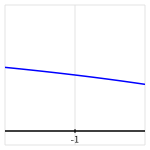
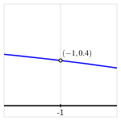
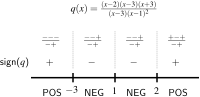
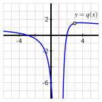
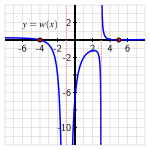
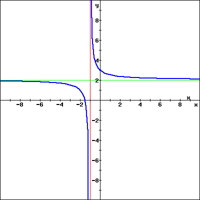
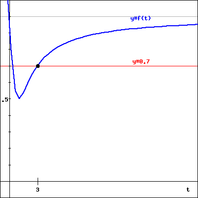
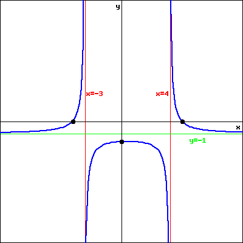
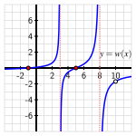

Section5.5Características clave de las funciones racionales
Motivating Questions
¿Qué significa decir que una función racional tiene un “hueco” en un cierto punto, y qué estructura algebraica lleva a tal comportamiento?
¿Cómo determinamos dónde una función racional tiene ceros y dónde tiene asíntotas verticales?
¿Qué revela un gráfico de signos sobre el comportamiento de una función racional y cómo desarrollamos un gráfico de signos a partir de una fórmula dada?
Dado que cualquier función racional es la razón de dos funciones polinomiales, es natural hacer preguntas sobre funciones racionales similares a las que hacemos sobre polinomios. Con los polinomios, a menudo es útil saber dónde el valor de la función es cero. En una función racional \(r(x) = \frac{p(x)}{q(x)}\text{,}\) nos interesa saber dónde \(p(x) = 0\) y dónde \(q(x) = 0\text{.}\)
Conectado a estas preguntas, queremos entender tanto dónde el valor de salida de una función racional es cero, como dónde la función no está definida. Además, a partir del comportamiento de funciones de potencia racional simples como \(\frac{1}{x}\text{,}\) esperamos que las funciones racionales no solo tengan asíntotas horizontales (como se investiga en Sección 5.4), sino también asíntotas verticales. A primera vista, estas preguntas sobre ceros y asíntotas verticales de funciones racionales pueden parecer elementales cuyas respuestas simplemente dependen de dónde el numerador y el denominador de la función racional son cero. Pero de hecho, las funciones racionales a menudo admiten un comportamiento muy sutil que puede escapar al ojo humano y al gráfico generado por una computadora.
Preview Activity5.5.1.
Considera la función racional \(r(x) = \frac{x^2 - 1}{x^2 - 3x - 4}\text{,}\) y sea \(p(x) = x^2 - 1\) (el numerador de \(r(x)\)) y \(q(x) = x^2 - 3x - 4\) (el denominador de \(r(x)\)).
Razonando algebraicamente, ¿para qué valores de \(x\) es \(p(x) = 0\text{?}\)
Nuevamente razonando algebraicamente, ¿para qué valores de \(x\) es \(q(x) = 0\text{?}\)
Define \(r(x)\) en Desmos, y evalúa la función apropiadamente para encontrar valores numéricos para la salida de \(r\) y así completar las siguientes tablas.
\(x\)
\(r(x)\)
\(4.1\)
\(\)
\(4.01\)
\(\)
\(4.001\)
\(\)
\(3.9\)
\(\)
\(3.99\)
\(\)
\(3.999\)
\(\)
\(x\)
\(r(x)\)
\(1.1\)
\(\)
\(1.01\)
\(\)
\(1.001\)
\(\)
\(0.9\)
\(\)
\(0.99\)
\(\)
\(0.999\)
\(\)
\(x\)
\(r(x)\)
\(-1.1\)
\(\)
\(-1.01\)
\(\)
\(-1.001\)
\(\)
\(-0.9\)
\(\)
\(-0.99\)
\(\)
\(-0.999\)
\(\)
¿Por qué \(r\) se comporta de la manera en que lo hace cerca de \(x = 4\text{?}\) Explica describiendo el comportamiento del numerador y el denominador.
¿Por qué \(r\) se comporta de la manera en que lo hace cerca de \(x = 1\text{?}\) Explica describiendo el comportamiento del numerador y el denominador.
¿Por qué \(r\) se comporta de la manera en que lo hace cerca de \(x = -1\text{?}\) Explica describiendo el comportamiento del numerador y el denominador.
Grafica \(r\) en Desmos. ¿Hay algo sorprendente o engañoso sobre el gráfico que Desmos genera?
Subsection5.5.1Cuando una función racional tiene un “hueco”
Dos características importantes de cualquier función racional \(r(x) = \frac{p(x)}{q(x)}\) son los ceros y las asíntotas verticales que la función pueda tener. Estos aspectos de una función racional están estrechamente relacionados con los puntos donde el numerador y el denominador, respectivamente, son cero. Al mismo tiempo, un problema sutil relacionado puede llevar a un comportamiento radicalmente diferente. Para entender por qué, primero recordemos algunos hechos clave sobre fracciones que involucran \(0\text{.}\) Como estamos trabajando con una función, pensaremos en fracciones cuyo numerador y denominador se acercan a valores particulares.
Si el numerador de una fracción se acerca a \(0\) mientras que el denominador se acerca a un valor distinto de cero, entonces los valores de la fracción en general se acercarán a cero. Por ejemplo, considera la secuencia de valores
Como el numerador se acerca cada vez más a \(0\) y el denominador se mantiene alejado de \(0\text{,}\) los cocientes tienden a \(0\text{.}\)
De manera similar, si el denominador de una fracción se acerca a \(0\) mientras que el numerador se acerca a un valor distinto de cero, entonces la fracción en general aumenta sin límite. Si consideramos los valores recíprocos de la secuencia anterior, vemos que
Como el denominador se acerca cada vez más a \(0\) y el numerador se mantiene alejado de \(0\text{,}\) los cocientes aumentan sin límite.
Estos dos comportamientos muestran cómo surgen los ceros y las asíntotas verticales de una función racional \(r(x) = \frac{p(x)}{q(x)}\text{:}\) donde el numerador \(p(x)\) es cero y el denominador \(q(x)\) es distinto de cero, la función \(r\) tendrá un cero; y donde \(q(x)\) es cero y \(p(x)\) es distinto de cero, la función tendrá una asíntota vertical. Lo que debemos tener cuidado es la situación especial donde ambos el numerador \(p(x)\) y el denominador \(q(x)\) son simultáneamente cero. De hecho, si el numerador y el denominador de una fracción ambos se acercan a \(0\text{,}\) puede surgir un comportamiento diferente. Por ejemplo, considera la secuencia
En esta situación, tanto el numerador como el denominador se están acercando a \(0\text{,}\) pero el valor de la fracción en general es siempre \(2\text{.}\) Esto es muy diferente de las dos secuencias que consideramos anteriormente. En Ejemplo 5.5.1, exploramos un comportamiento similar en el contexto de una función racional particular.
Example5.5.1.
Considera la función racional \(r(x) = \frac{x^2 - 1}{x^2 - 3x - 4}\) de Actividad de Vista Previa 5.5.1, cuyo numerador es \(p(x) = x^2 - 1\) y cuyo denominador es \(q(x) = x^2 - 3x - 4\text{.}\) Explica por qué el gráfico de \(r\) generado por Desmos u otro dispositivo computacional es incorrecto, e identifica también las ubicaciones de cualquier cero y asíntota vertical de \(r\text{.}\)
Solution.
Es útil con cualquier función racional factorizar el numerador y el denominador. Notamos que \(p(x) = x^2 - 1 = (x-1)(x+1)\) y \(q(x) = x^2 - 3x - 4 = (x+1)(x-4)\text{.}\) El dominio de \(r\) es así el conjunto de todos los números reales excepto \(x = -1\) y \(x = 4\text{,}\) el conjunto de todos los puntos donde \(q(x) \ne 0\text{.}\)
Sabiendo que \(r\) no está definido en \(x = -1\text{,}\) es natural estudiar el gráfico de \(r\) cerca de ese valor. Al graficar la función en Desmos, obtenemos un resultado similar al mostrado en Figura 5.5.2, que parece no mostrar un comportamiento inusual en \(x = -1\text{,}\) e incluso que \(r(-1)\) está definido. Si hacemos zoom en ese punto, como se muestra en Figura 5.5.3, la tecnología aún no logra demostrar visualmente el hecho de que \(r(-1)\) no está definido. Esto se debe a que las utilidades de graficación muestrean funciones en un número finito de puntos y luego conectan los puntos resultantes para generar la curva que vemos.
Figure5.5.3.Haciendo zoom en \(r(x)\) cerca de \(x = -1\text{.}\)
Figure5.5.4.Cómo debería aparecer realmente el gráfico de \(r(x)\) cerca de \(x = -1\text{.}\)
Sabemos por nuestro trabajo algebraico con el denominador, \(q(x) = (x+1)(x-4)\text{,}\) que \(r\) no está definido en \(x = -1\text{.}\) Mientras el denominador \(q\) se acerca cada vez más a \(0\) a medida que \(x\) se acerca a \(-1\text{,}\) también lo hace el numerador, ya que \(p(x) = (x-1)(x+1)\text{.}\) Si consideramos valores cercanos pero no iguales a \(x = -1\text{,}\) vemos resultados en Tabla 5.5.5.
Table5.5.5.Valores de \(r(x) = \frac{x^2 - 1}{x^2 - 3x - 4}\) cerca de \(x = -1\text{.}\)
\(x\)
\(-1.1\)
\(-1.01\)
\(-1.001\)
\(r(x)\)
\(\frac{0.21}{0.51} \approx 0.4118 \)
\(\frac{0.0201}{0.0501} \approx 0.4012\)
\(\frac{0.002001}{0.005001} \approx 0.4001\)
\(x\)
\(-0.9\)
\(-0.99\)
\(-0.999\)
\(r(x)\)
\(\frac{-0.19}{-0.49} \approx 0.3878\)
\(\frac{-0.0199}{-0.0499} \approx 0.3989\)
\(\frac{-0.001999}{-0.004999} \approx 0.3999\)
En la tabla, vemos que tanto el numerador como el denominador se acercan cada vez más a \(0\) a medida que \(x\) se acerca cada vez más a \(-1\text{,}\) pero que su cociente parece acercarse cada vez más a \(y = 0.4\text{.}\) De hecho, vemos este comportamiento en el gráfico de \(r\text{,}\) aunque la utilidad de graficación no muestra el hecho de que \(r(-1)\) en realidad no está definido. Un gráfico preciso de \(r\) cerca de \(x = -1\) debería verse como el presentado en Figura 5.5.4, donde vemos un círculo abierto en el punto \((-1, 0.4)\) que demuestra que \(r(-1)\) no está definido, y que \(r\) no tiene una asíntota vertical ni un cero en \(x = -1\text{.}\)
Finalmente, también notamos que \(p(1) = 0\) y \(q(1) = -6\text{,}\) por lo que en \(x = 1\text{,}\)\(r(x)\) tiene un cero (su numerador es cero y su denominador no lo es). Además, \(q(4) = 0\) y \(p(4) = 15\) (su denominador es cero y su numerador no lo es), por lo que \(r(x)\) tiene una asíntota vertical en \(x = 4\text{.}\) Estas características están representadas con precisión en el gráfico original de Desmos mostrado en Figura 5.5.2.
En la situación donde una función racional no está definida en un punto pero no tiene una asíntota vertical allí, diremos que el gráfico de la función tiene un hueco. En cálculo, usamos notación de límite para identificar un hueco en el gráfico de una función. De hecho, habiendo mostrado en Ejemplo 5.5.1 que el valor de \(r(x)\) se acerca cada vez más a \(0.4\) a medida que \(x\) se acerca cada vez más a \(-1\text{,}\) naturalmente escribimos
como una forma abreviada de representar el comportamiento de \(r\) (similar a cómo hemos escrito límites que involucran \(\infty\)). Este hecho, combinado con que \(r(-1)\) no está definido, nos dice que cerca de \(x = -1\) el gráfico se acerca a un valor de \(0.4\) pero tiene que tener un hueco en el punto \((-1,0.4)\text{,}\) como se muestra en Figura 5.5.4. Debido a que encontraremos un comportamiento similar con otras funciones, definimos formalmente la notación de límite de la siguiente manera.
Definition5.5.6.
Sea \(a\) y \(L\) números reales finitos, y sea \(r\) una función definida cerca de \(x = a\text{,}\) pero no necesariamente en \(x = a\) mismo. Si podemos hacer que el valor de \(r(x)\) sea tan cercano al número \(L\) como queramos tomando \(x\) suficientemente cercano (pero no igual) a \(a\text{,}\) entonces escribimos
\begin{equation*}
\lim_{x \to a} r(x) = L
\end{equation*}
y decimos que “el límite de \(r\) cuando \(x\) se acerca a \(a\) es \(L\)”.
Las observaciones clave sobre ceros, asíntotas verticales y huecos en Ejemplo 5.5.1 se aplican a cualquier función racional.
Características de una función racional.
Sea \(r(x) = \frac{p(x)}{q(x)}\) una función racional.
Si \(p(a) = 0\) y \(q(a) \ne 0\text{,}\) entonces \(r(a) = 0\text{,}\) por lo que \(r\) tiene un cero en \(x = a\text{.}\)
Si \(q(a) = 0\) y \(p(a) \ne 0\text{,}\) entonces \(r(a)\) no está definido y \(r\) tiene una asíntota vertical en \(x = a\text{.}\)
Si \(p(a) = 0\) y \(q(a) = 0\) y podemos mostrar que hay un número finito \(L\) tal que
entonces \(r(a)\) no está definido y \(r\) tiene un hueco en el punto \((a,L)\text{.}\) 1
Es posible que tanto \(p(a) = 0\) como \(q(a) = 0\) y que \(r\) aún tenga una asíntota vertical en \(x = a\text{.}\) Exploramos esta posibilidad más a fondo en Ejercicio 5.5.4.9.
Activity5.5.2.
For each of the following rational functions, state the function’s domain and determine the locations of all zeros, vertical asymptotes, and holes. Provide clear justification for your work by discussing the zeros of the numerator and denominator, as well as a table of values of the function near any point where you believe the function has a hole. In addition, state the value of the horizontal asymptote of the function or explain why the function has no such asymptote.
Subsection5.5.2Gráficos de signos y encontrar fórmulas para funciones racionales
Al igual que con las funciones polinomiales, podemos usar gráficos de signos para describir el comportamiento de las funciones racionales. La única diferencia significativa para su uso en este contexto es que no solo debemos incluir todos los valores de \(x\) donde la función racional \(r(x) = 0\text{,}\) sino también todos los valores de \(x\) en los que la función \(r\) no está definida. Esto se debe a que es posible que una función racional cambie de signo en un punto que se encuentra fuera de su dominio, como cuando la función tiene una asíntota vertical.
Example5.5.7.
Construye un gráfico de signos para la función \(q(x) = \frac{(x-2)(x^2-9)}{(x-3)(x-1)^2}\text{.}\) Luego, grafica la función \(q\) y compara el gráfico y el gráfico de signos.
Solution.
Primero, factorizamos completamente \(q\) e identificamos los valores de \(x\) que no están en su dominio. Dado que \(x^2-9 = (x-3)(x+3)\text{,}\) vemos que
Del denominador, observamos que \(q\) no está definida en \(x = 3\) y \(x = 1\) ya que esos valores hacen que los factores \(x - 3 = 0\) o \((x-1)^2 = 0\text{.}\) Así, el dominio de \(q\) es el conjunto de todos los números reales excepto \(x = 1\) y \(x = 3\text{.}\) Del numerador, vemos que tanto \(x = 2\) como \(x = -3\) son ceros de \(q\) ya que estos valores hacen que el numerador sea cero mientras que el denominador no lo es. Esperamos que \(q\) tenga un agujero en \(x = 3\) ya que este valor de \(x\) no está en el dominio y hace que tanto el numerador como el denominador sean \(0\text{.}\) De hecho, calcular valores de \(q\) para \(x\) cerca de \(x = 3\) sugiere que
y así \(q\) no cambia de signo en \(x = 3\text{.}\)
Así, tenemos tres valores diferentes de \(x\) para colocar en el gráfico de signos: \(x = -3\text{,}\)\(x = 1\) y \(x = 2\text{.}\) Ahora analizamos el signo de cada uno de los factores en \(q(x) = \frac{(x-2)(x-3)(x+3)}{(x-3)(x-1)^2}\) en los varios intervalos. Para \(x \lt -3\text{,}\)\((x-2) \lt 0\text{,}\)\((x-3) \lt 0\text{,}\)\((x+3) \lt 0\) y \((x-1)^2 \gt 0\text{.}\) Así, para \(x \lt -3\text{,}\) el signo de \(q\) es
ya que hay un número par de términos negativos en el cociente.
En el intervalo \(-3 \lt x \lt 1\text{,}\)\((x-2) \lt 0\text{,}\)\((x-3) \lt 0\text{,}\)\((x+3) \gt 0\) y \((x-1)^2 \gt 0\text{.}\) Así, para estos valores de \(x\text{,}\) el signo de \(q\) es
Usando un razonamiento similar, podemos completar el gráfico de signos mostrado en Figure 5.5.8. Un gráfico de la función \(q\text{,}\) como se ve en Figure 5.5.9, muestra un comportamiento que coincide con la función de signos, así como la necesidad de identificar manualmente el agujero en \((3, 1.5)\text{,}\) que es pasado por alto por el software de gráficos.
Figure5.5.8.El gráfico de signos para \(q\text{.}\)
Figure5.5.9.Un gráfico de \(q\text{.}\)
En tanto el gráfico de signos como en la figura, vemos que \(q\) cambia de signo en cada uno de sus ceros, \(x = -3\) y \(x = 2\text{,}\) y que no cambia al pasar por su asíntota vertical en \(x = 1\text{.}\) La razón por la que \(q\) no cambia de signo en la asíntota es debido al factor repetido de \((x-1)^2\) que siempre es positivo.
Para encontrar una fórmula para una función racional con ciertas propiedades, podemos razonar de maneras similares a nuestro trabajo con polinomios. Dado que la función racional debe tener una expresión polinómica tanto en el numerador como en el denominador, al pensar en dónde deben ser cero el numerador y el denominador, a menudo podemos generar una fórmula cuyo gráfico satisfará las propiedades deseadas.
Activity5.5.3.
Encuentra una fórmula para una función racional que cumpla con los criterios establecidos según las palabras, un gráfico de signos o un gráfico. Escribe varias oraciones para justificar por qué tu fórmula coincide con las especificaciones.
Una función racional \(r\) tal que \(r\) tenga una asíntota vertical en \(x = -2\text{,}\) un cero en \(x = 1\text{,}\) un agujero en \(x = 5\) y una asíntota horizontal de \(y = -3\text{.}\)
Una función racional \(u\) cuyo numerador tenga grado \(3\text{,}\) el denominador tenga grado \(3\) y que tenga exactamente una asíntota vertical en \(x = -4\) y una asíntota horizontal de \(y = \frac{3}{7}\text{.}\)
Una función racional \(w\) cuya fórmula genere un gráfico con todas las características mostradas en Figure 5.5.10. Supón que \(w(5) = 0\) pero \(w(x) \gt 0\) para todos los demás \(x\) tales que \(x \gt 3\text{.}\)
Una función racional \(z\) cuya fórmula satisfaga el gráfico de signos mostrado en Figure 5.5.11, y para la cual \(z\) no tenga asíntota horizontal y sus únicas asíntotas verticales ocurran en los dos valores medios de \(x\) anotados en el gráfico de signos.
Figure5.5.10.Gráfico de la función racional \(w\text{.}\)
Figure5.5.11.Gráfico de signos para la función racional \(z\text{.}\)
Una función racional \(f\) que tenga exactamente dos agujeros, dos asíntotas verticales, dos ceros y una asíntota horizontal.
Subsection5.5.3Resumen
Si una función racional \(r(x) = \frac{p(x)}{q(x)}\) tiene las propiedades de que \(p(a) = 0\) y \(q(a) = 0\) y
entonces \(r\) tiene un agujero en el punto \((a,L)\text{.}\) Este comportamiento puede ocurrir cuando hay un factor coincidente de \((x-a)\) tanto en \(p\) como en \(q\text{.}\)
Para una función racional \(r(x) = \frac{p(x)}{q(x)}\text{,}\) determinamos dónde la función tiene ceros y dónde tiene asíntotas verticales considerando dónde el numerador y el denominador son \(0\text{.}\) En particular, si \(p(a) = 0\) y \(q(a) \ne 0\text{,}\) entonces \(r(a) = 0\text{,}\) por lo que \(r\) tiene un cero en \(x = a\text{.}\) Y si \(q(a) = 0\) y \(p(a) \ne 0\text{,}\) entonces \(r(a)\) no está definida y \(r\) tiene una asíntota vertical en \(x = a\text{.}\)
Escribiendo el numerador de una función racional en forma factorizada, podemos generar un gráfico de signos para la función que tenga en cuenta todos los ceros y las asíntotas verticales de la función, que son los únicos puntos donde la función puede cambiar de signo. Probando valores de \(x\) en varios intervalos entre ceros y/o asíntotas verticales, podemos determinar dónde la función racional es positiva y dónde es negativa.
Exercises5.5.4Exercises
1.
The graph below is a vertical and/or horizontal shift of \(y=1/x\) (assume no reflections or compression/expansions have been applied).

(a) The graph’s equation can be written in the form
\begin{equation*}
f(x) = \frac{1}{x+A} + B
\end{equation*}
for constants \(A\) and \(B\text{.}\) Based on the graph above, find the values for \(A\) and \(B\text{.}\)
\(A =\) and \(B =\)
(b) Now take your formula from part (a) and write it as the ratio of two linear polynomials of the form,
\begin{equation*}
f(x) = \frac{M x + C}{x+D}
\end{equation*}
for constants \(M\) , \(C\text{,}\) and \(D\text{.}\) What are the values of \(M\) , \(C\text{,}\) and \(D\text{?}\)
\(M =\) , \(C =\) , and \(D =\)
(c) Complete the exact values of the coordinates of the intercepts of the graph.
\(x\)-intercept:
\(y\)-intercept:
2.
Find a possible formula for the function graphed below. The \(x\)-intercept is marked with a point located at \((1, 0)\text{,}\) and the \(y\)-intercept is marked with a point located at \((0, -0.25)\text{.}\) The asymptotes are \(y = -1\) and \(x = 4\text{.}\) Give your formula as a reduced rational function.
\(f(x) =\)

(Click on graph to enlarge)
3.
Find a possible formula for the function graphed below. The \(x\)-intercepts are marked with points located at \((5, 0)\) and \((-4, 0)\text{,}\) while the \(y\)-intercept is marked with a point located at \(\left( 0, -\frac{5}{3} \right)\text{.}\) The asymptotes are \(y = -1\text{,}\)\(x = -3\text{,}\) and \(x = 4\text{.}\) Give your formula as a reduced rational function.
\(f(x) =\)

(Click on graph to enlarge)
4.
Let
\begin{equation*}
f(x) = \frac{ 6 x - 6}{7 x + 4}.
\end{equation*}
Find and simplify \(f^{-1}(x) =\)
5.
Let \(t\) be the time in weeks. At time \(t=0\text{,}\) organic waste is dumped into a pond. The oxygen level in the pond at time \(t\) is given by
(a) On a separate piece of paper, graph this function.
(b) What will happen to the oxygen level in the lake as time goes on?
Choose One
The oxygen level will continue to decrease in the long-run.
The oxygen level will continue to increase in the long-run.
The oxygen level will eventually return to its normal level in the long-run.
It cannot determine based on the given information.
(c) Approximately how many weeks must pass before the oxygen level returns to \(80\)% of its normal level?
weeks (Round to at least two decimal places.)
6.
For each of the following rational functions, determine, with justification, the exact locations of all (i) horizontal asymptotes, (ii) vertical asymptotes, (iii) zeros, and (iv) holes of the function. Clearly show your work and thinking.
Find a formula for a rational function that meets the stated criteria, with justification. If no such formula is possible, explain why.
A rational function \(r(x)\) in the form \(r(x) = \frac{k}{x-a} + b\) so that \(r\) has a horizontal asymptote of \(y = -\frac{3}{7}\text{,}\) a vertical asymptote of \(x = \frac{5}{2}\text{,}\) and \(r(0) = 4\text{.}\)
A rational function \(s(x)\) that has no horizontal asymptote, has zeros at \(x = -5\) and \(x = 3\text{,}\) has a single vertical asymptote at \(x = -1\text{,}\) and satisfies \(\lim_{x \to \infty} s(x) = -\infty\) and \(\lim_{x \to -\infty} s(x) = +\infty\text{.}\)
A rational function \(u(x)\) that is positive for \(x \lt -4\text{,}\) negative for \(-4 \lt x \lt -2\text{,}\) negative for \(-2 \lt x \lt 1\text{,}\) positive for \(1 \lt x \lt 5\text{,}\) and negative for \(x \gt 5\text{.}\) The only zeros of \(u\) are located at \(x = -4\) and \(x = -2\text{.}\) In addition, \(u\) has a hole at \(x = 4\text{.}\)
A rational function \(w(x)\) whose graph is shown in Figure 5.5.12.

Figure5.5.12.A plot of the rational function \(w\text{.}\)
8.
Graph each of the following rational functions and decide whether or not each function has an inverse function. If an inverse function exists, find its formula. In addition, state the domain and range of each function you consider (the original function as well as its inverse function, if the inverse function exists).
For each of the following rational functions, identify the location of any potential hole in the graph. Then, create a table of function values for input values near where the hole should be located. Use your work to decide whether or not the graph indeed has a hole, with written justification.
True or false: given \(r(x) = \frac{p(x)}{q(x)}\text{,}\) if \(p(a) = 0\) and \(q(a) = 0\text{,}\) then \(r\) has a hole at \(x = a\text{.}\)
10.
In the questions that follow, we explore the average rate of change of power functions on the interval \([1,x]\text{.}\) To begin, let \(f(x) = x^2\) and let \(A(x)\) be the average rate of change of \(f\) on \([1,x]\text{.}\)
Explain why \(A\) is a rational function of \(x\text{.}\)
What is the domain of \(A\text{?}\)
At the point where \(A\) is undefined, does \(A\) have a vertical asymptote or a hole? Justify your thinking clearly.
What can you say about the average rate of change of \(f\) on \([1,x]\) as \(x\) gets closer and closer (but not equal) to \(1\text{?}\)
Now let \(g(x) = x^3\) and \(B(x)\) be the average rate of change of \(B\) on \([1,x]\text{.}\) Respond to prompts (a) - (d) but this time for the function \(B\) instead of \(A\text{.}\)
Finally, let \(h(x) = x^4\) and \(C(x)\) be the average rate of change of \(C\) on \([1,x]\text{.}\) Respond to prompts (a) - (d) but this time for the function \(C\) instead of \(A\text{.}\)